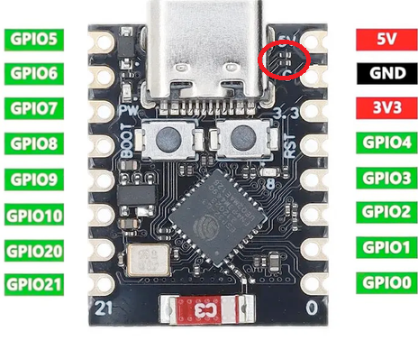
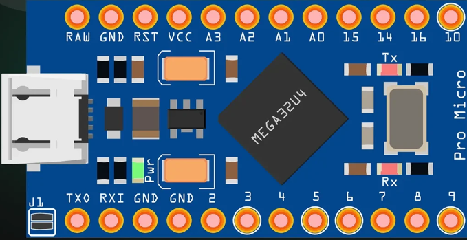

DIY-Programmer-Firmware aktualisieren
Trenne zuerst die USB-Verbindung im Kalibrierassistenten. Lass danach das Board per USB angeschlossen.
ESP32-C3 SuperMini v0.16 (Test) / v0.14
One-Wire und I²C. Wähle im USB-Dialog den ESP32-C3 SuperMini.
Neu in v0.14 (Labor): I²C-Erkennung auch für Sensoradressen 0x79–0x7F, einschliesslich 0x7D. Beide Adresspaare 0x6C/0x6D und 0x7C/0x7D am Sensor getestet. USB-Antworten werden vollständig gesendet, bevor der nächste Befehl verarbeitet wird. Die installierbare Firmware ist kompiliert. Der tatsächliche NVM-Schreibvorgang am Sensor ist noch nicht hardwarevalidiert. Nur mit einem entbehrlichen Testchip testen. Vor dem Firmwareupdate alle noch nicht gespeicherten Kalibrierdaten und das Original-NVM sichern. Technische Details.
v0.16 (One-Wire-Testfirmware): Zusätzliche Startversuche für bereits analog abgeglichene Sensoren mit 4-ms-Startfenster. Timing-Diagnose, keine Änderung der NVM-Schreiblogik. Hardwareprüfung ausstehend. Vor dem Flashen Original-NVM und ungesicherte Abgleichdaten sichern.
Vorherige Version als Rückfallmöglichkeit:
Installer wird geladen …

| ESP32-C3 | Elmos E703.11 |
|---|---|
| GPIO4 | AODO (Pin 14) · One-Wire |
| GPIO6 | SDA (Pin 11) · I²C |
| GPIO7 | SCL (Pin 10) · I²C |
| GPIO10 | Optional: Enable am Lastschalter für Sensor-VDD |
| GND | Sensor-GND |
Sensorversorgung und Signalpegel: 3,3 V. Bei I²C-Auswahl über NCS/SA0 den Sensor-Pin 9 mit GND verbinden.
Pro Micro v0.29 (Labor)
One-Wire und I²C. Wähle die auf deinem Board angegebene Ausführung.
HEX-Datei für manuellen Upload

| Pro Micro | Elmos E703.11 |
|---|---|
| D4 | AODO (Pin 14) · One-Wire |
| D2 | SDA (Pin 11) · I²C |
| D3 | SCL (Pin 10) · I²C |
| D7 | Optional: Enable am Lastschalter für Sensor-VDD |
| GND | Sensor-GND |
Sensorversorgung und Signalpegel passend zur Pro-Micro-Version: 3,3 V (8 MHz) oder 5 V (16 MHz).
Anleitung für Pro MicroFür dauerhaftes Speichern über I²C die Sensorversorgung über den Adapter schalten und den Sensor vor dem Abgleich verbinden. Der Sensor muss nach dem Einschalten direkt über I²C antworten. Eine vorübergehende I²C-Freigabe über AODO ermöglicht den Zugriff im RAM.